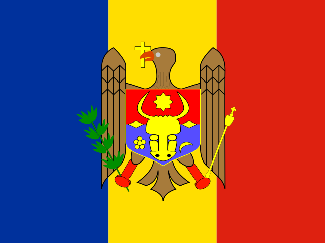
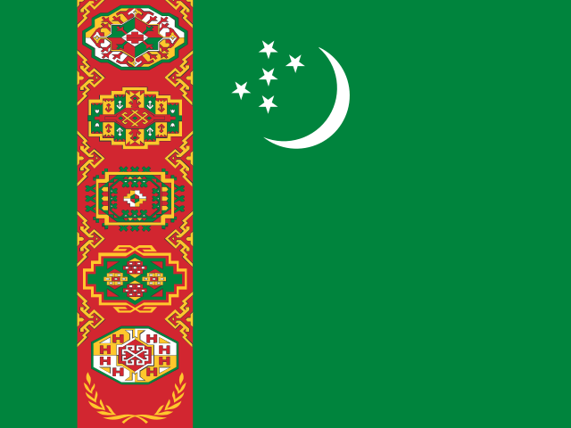

역도 (Weightlifting)
2028 LA 올림픽 역도에는 12개 세부종목이 있다.
![역도 한눈에 보기. LA28 출전 규모 120명 (12체급). 경기 방식: 인상 3회 → 용상 3회 → 합계 순위. 핵심 규칙: 인상과 용상을 3번씩 시도해 각 최고 기록을 더한다. 합계가 같으면 먼저 그 기록을 들어 올린 선수가 이긴다. 체급마다 10명, 국가당 성별 3명까지다. 출전권 배정 (전체 120명): 올림픽 예선 랭킹 96, 대륙 대표 12, 개최국 6, 보편성 6. 체급별 쿼터 (12체급 모두 같은 구조): 남자 65kg 10명 (OQR 랭킹 8, 대륙 대표 1, 개최국·보편성 1); 남자 75kg 10명 (OQR 랭킹 8, 대륙 대표 1, 개최국·보편성 1); 남자 85kg 10명 (OQR 랭킹 8, 대륙 대표 1, 개최국·보편성 1); 남자 95kg 10명 (OQR 랭킹 8, 대륙 대표 1, 개최국·보편성 1); 남자 110kg 10명 (OQR 랭킹 8, 대륙 대표 1, 개최국·보편성 1); 남자 +110kg 10명 (OQR 랭킹 8, 대륙 대표 1, 개최국·보편성 1); 여자 53kg 10명 (OQR 랭킹 8, 대륙 대표 1, 개최국·보편성 1); 여자 61kg 10명 (OQR 랭킹 8, 대륙 대표 1, 개최국·보편성 1); 여자 69kg 10명 (OQR 랭킹 8, 대륙 대표 1, 개최국·보편성 1); 여자 77kg 10명 (OQR 랭킹 8, 대륙 대표 1, 개최국·보편성 1); 여자 86kg 10명 (OQR 랭킹 8, 대륙 대표 1, 개최국·보편성 1); 여자 +86kg 10명 (OQR 랭킹 8, 대륙 대표 1, 개최국·보편성 1). 예선 구조 (차례대로): 올림픽 예선 랭킹 (OQR) 체급당 8명 (~2028.05, 국가당 체급 1 · 성별 3); 대륙 대표 체급당 1명 (OQR 안); 개최국·보편성 성별 6명 (미국 3 · 보편성 3).](assets/summary/olweightlifting.svg)
LA28 예선 대회 결과 2026-11-08 03:33 KST
LA28 예선 대회만 싣는다. 위키백과 대회 문서에서 자동으로 모은다. 대회 중에는 한 시간마다 새로 읽는다. 한국 선수가 있는 줄은 붉게 칠했다. 하계 실시간 전체 →
IWF 세계역도선수권 닝보 · 10.27~11.08 진행 중 예선: OQR 1기간 대회 · 결과 42/48종목 · 한국 금0 은0 동0
| 종목 | 금 | 은 | 동 |
|---|---|---|---|
| 남자 | |||
| 60 kg 인상 | |||
| 60 kg 용상 | |||
| 60 kg 합계 | |||
| 65 kg 인상 | |||
| 65 kg 용상 | |||
| 65 kg 합계 | |||
| 70 kg 인상 | |||
| 70 kg 용상 | |||
| 70 kg 합계 | |||
| 75 kg 인상 | |||
| 75 kg 용상 | |||
| 75 kg 합계 | |||
| 85 kg 인상 |  Marin Robu 몰도바 176 kg | ||
| 85 kg 용상 | |||
| 85 kg 합계 | |||
| 95 kg 인상 | |||
| 95 kg 용상 | |||
| 95 kg 합계 | |||
| 110 kg 인상 | |||
| 110 kg 용상 |  Şahzadbek Matýakubow 투르크메니스탄 230 kg | ||
| 110 kg 합계 | Şahzadbek Matýakubow 투르크메니스탄 417 kg | ||
| 여자 | |||
| 49 kg 인상 | |||
| 49 kg 용상 | |||
| 49 kg 합계 | |||
| 53 kg 인상 | |||
| 53 kg 용상 | |||
| 53 kg 합계 | |||
| 57 kg 인상 | |||
| 57 kg 용상 | |||
| 57 kg 합계 | |||
| 61 kg 인상 | |||
| 61 kg 용상 | |||
| 61 kg 합계 | |||
| 69 kg 인상 | |||
| 69 kg 용상 | |||
| 69 kg 합계 | |||
| 77 kg 인상 | |||
| 77 kg 용상 | |||
| 77 kg 합계 | |||
| 86 kg 인상 | Alina Marushchak BHR 123 kg | ||
| 86 kg 용상 | Alina Marushchak BHR 149 kg | ||
| 86 kg 합계 | Alina Marushchak BHR 272 kg | ||
남은 종목: +110 kg 인상, +110 kg 용상, +110 kg 합계, +86 kg 인상, +86 kg 용상, +86 kg 합계
메달 순위:  북한 6-3-3 ·
북한 6-3-3 ·  중국 5-3-2 ·
중국 5-3-2 ·  이집트 1-0-1 ·
이집트 1-0-1 ·  불가리아 1-0-0 ·
불가리아 1-0-0 ·  우즈베키스탄 1-0-0 ·
우즈베키스탄 1-0-0 ·  콜롬비아 0-1-1 ·
콜롬비아 0-1-1 ·  이란 0-1-1 ·
이란 0-1-1 ·  차이니스 타이베이 0-1-1
차이니스 타이베이 0-1-1
출처: 위키백과 2026 World Weightlifting Championships · 2026-11-08 03:33 읽음
잠정 OQR 한국 현황 2026-11-07 16:59 KST · 비공식
사설 집계 totalintel.org의 체급별 잠정 올림픽예선랭킹(OQR). 체급마다 상위 8명(NOC당 1명)과 대륙 배정 1명이 출전권을 받는다. 현재 한국 선수 2명이 8위 안에 있다. 공식 순위가 아니며 출전권은 예선 기간(2028.05.07) 종료 뒤 IWF가 정한다.
| 체급 | 한국 선수 | 순위 | OQR 점수 | 8위와 비교 | 8위 점수 | 현재 1~8위 국가 |
|---|---|---|---|---|---|---|
| 여자 53kg | 상위 30위 안에 한국 선수 없음 | 198 | CHN, USA, PRK, THA, PHI, UZB, ROU, IND | |||
| 여자 61kg | 상위 30위 안에 한국 선수 없음 | 227 | CHN, PRK, TPE, COL, USA, CAN, UKR, PHI | |||
| 여자 69kg | 상위 30위 안에 한국 선수 없음 | 238 | PRK, COL, BLR, KOS, DOM, RUS, CAN, EGY | |||
| 여자 77kg | 김이슬 | 9 | 238 | 8위와 1점 차 | 239 | CHN, EGY, COL, RUS, USA, FIN, MEX, BRA |
| 남자 65kg | 윤여원 | 14 | 289 | 8위와 6점 차 | 295 | PRK, TUR, USA, CHN, VIE, INA, COL, JPN |
| 남자 75kg | 손현호 | 6 | 341 | 8위 안 | 337 | PRK, INA, THA, COL, JPN, KOR, TKM, BLR |
| 남자 85kg | 김성민 | 13 | 355 | 8위와 8점 차 | 363 | EGY, COL, CHN, KAZ, PRK, MDA, UZB, IRI |
| 남자 95kg | 이성원 | 5 | 385 | 8위 안 | 371 | BUL, KAZ, IRI, CHN, KOR, GEO, UZB, KOS |
| 남자 110kg | 상위 30위 안에 한국 선수 없음 | 393 | UZB, IRI, TKM, ROU, TPE, CHN, USA, KAZ | |||
결과 기록 전: 여자 86kg · 여자 +86kg · 남자 +110kg
예선 일정 (Timeline)
| 대회 | 기간 | 장소 |
|---|---|---|
| 2026 세계선수권 | 2026.10.27–11.08 | 닝보 (중국) |
| 2026 IWF 예선 I | 2026.12.07–12.16 | 도하 (카타르) |
| 2027 IWF 예선 II | 세부 일정 확인 대기 | 미정 |
| 2027 대륙선수권 | 세부 일정 확인 대기 (아시아선수권 포함) | 미정 |
| 2027 IWF 예선 III | 세부 일정 확인 대기 | 미정 |
| 2027 세계선수권 | 세부 일정 확인 대기 | 미정 |
| 2027 IWF 예선 IV | 세부 일정 확인 대기 | 미정 |
| 2028 IWF 예선 V | 세부 일정 확인 대기 | 미정 |
| 2028 대륙선수권 | 세부 일정 확인 대기 (아시아선수권 포함) | 미정 |
| 2028 세계선수권 | 예선 종료 2028.05.07 이전, 세부 일정 확인 대기 | 미정 |
예선 규정 (Qualification)
2026.10.02판 IWF 규정 기준. 여성 비올림픽 체급은 49kg으로 정정되었고, Best Lifter 미사용 쿼터 재배정이 포함되었다.
출전 쿼터
남녀 각 6체급, 전체 120명이 출전한다. 체급마다 10명이며 쿼터는 선수 이름으로 배정된다. 국가 올림픽위원회(NOC)는 성별 3명, 체급당 1명까지이며 최우수 선수(Best Lifter) 국가는 1명을 더 받을 수 있다.
| 성별 | 일반쿼터 | 개최국쿼터 | 보편성쿼터 | 합계 |
|---|---|---|---|---|
| 남자 | 54 | 3 | 3 | 60 |
| 여자 | 54 | 3 | 3 | 60 |
| 합계 | 108 | 6 | 6 | 120 |
일반쿼터 54명 = OQR 48(6체급 × 8) + 대륙 대표 6. 체급: 남 65·75·85·95·110·+110kg / 여 53·61·69·77·86·+86kg.
NOC 출전 제한
한 국가 올림픽위원회(NOC)는 성별 3명까지 출전할 수 있고, 같은 체급에는 1명만 나갈 수 있다. 남녀 각각 6체급 중 최대 3체급씩, 두 성별을 합쳐 최대 6명이다.
최우수 선수(Best Lifter) 국가는 해당 성별 상한에 도달했을 때 최대 4명까지 허용된다. Best Lifter 국가가 자동으로 추가 선수를 받는 것은 아니다.
D.1~D.4 쿼터 구분
| 규정 | 이름 | 성별별 쿼터 | 선발 방식 |
|---|---|---|---|
| D.1 | OQR 체급별 상위 8명 | 체급당 8명 (6체급 = 48명) | 2028.05 최종 올림픽예선랭킹(OQR)에서 체급별 상위 8명. 국가는 체급당 1명, 성별 3명 한도 안에서만 남는다. |
| D.2 | 대륙 대표 | 6명 (체급당 1명) | 체급마다 상위 8명 안에 대표가 없는 대륙의 최상위 적격 선수 1명. 5대륙이 모두 채워져 있으면 다음 순위 선수에게 간다. |
| D.3 | 개최국 쿼터 | 3명 (체급 무관) | 미국에 성별 3명을 보장한다. 1기간 합계 2회 + 2기간 1회, 같은 체급 3회 기록이 필요하다. 개최국 쿼터는 NOC에 배정된다. |
| D.4 | 보편성 쿼터 | 3명 (체급 무관) | 삼자위원회가 배정한다. 1기간 1회 + 2기간 1회 합계 기록이 필요하다. IOC 신청 마감 2028.01.15. |
체급당 합계: OQR 8 + 대륙 대표 1 + 개최국 또는 보편성 1 = 10명. 출처: 허브에 기록된 기존 규정 요약. IWF 규정 PDF(2026.10.02판)는 접속 차단으로 원문 대조를 하지 못했으므로 원문 확인 후 수정이 필요하다.
참가 자격
올림픽 헌장(제41조 국적, 제43조 세계반도핑규약 및 경기 조작 방지 규정), IOC 참가 조건, IWF 규정과 IWF 반도핑 규정을 충족해야 한다.
- 2013.12.31 이전 출생이어야 한다.
- OQR에 남으려면 같은 체급에서 1기간 합계 3회, 2기간 합계 2회가 필요하다.
- 예선 대회 출전 명단은 대회 3개월 전까지 제출해야 하며, 예선 기간 내내 도핑 검사에 응할 수 있어야 한다.
- 2024.07.26–2028.07.13 국가 연맹의 반도핑 위반이 누적되면(3건 이상 등) 쿼터 일부 또는 전부가 회수될 수 있다.
예선 및 대회 일정
2026.07.27 OQR 기간이 시작되었고, 첫 대회는 2026.10.27–11.08 닝보 세계선수권이다.
| 날짜 | 일정 |
|---|---|
| 2026.07.27 | OQR 기간 시작 (1기간) |
| 2026.10.27–11.08 | 2026 IWF 세계선수권 닝보 (중국) · 1기간 첫 대회 |
| 2026 | IWF 예선 대회 I |
| 2027 | IWF 예선 대회 II · 대륙선수권 · 예선 대회 III · 세계선수권 (1기간) |
| 2027–2028 | IWF 예선 대회 IV·V · 2028 대륙선수권 · 2028 세계선수권 (2기간) |
| 2028.01.15 | 보편성쿼터 신청 마감 |
| 2028.05.07 | OQR 기간 종료 |
| 2028.05.11 | OQR 발표 · 최우수 선수(Best Lifter) 발표 |
| 2028.05.17–26 | 복수 체급·국가 초과 선수 선택 |
| 2028.05.29 | 최종 OQR · 쿼터 통보 |
| 2028.06.05 | 국가 올림픽위원회(NOC) 사용 확정 |
| 2028.06.13 | 개최국 확정 |
| 2028.06.20–26 | 보편성 통보 · 확정 |
| 2028.06.26 | LA28 스포츠 엔트리 마감 |
남자 종목 (Men's events)
65 kg
한국 · 잠정 OQR 11.07 (비공식, totalintel): 윤여원 14위 289점 (8위와 6점 차) · 8위 295점
| 구분 | 쿼터 | NOC | 선수 |
|---|---|---|---|
| IWF 올림픽예선랭킹 (OQR) | 8 | 미정 | 미정 |
| 미정 | 미정 | ||
| 미정 | 미정 | ||
| 미정 | 미정 | ||
| 미정 | 미정 | ||
| 미정 | 미정 | ||
| 미정 | 미정 | ||
| 미정 | 미정 | ||
| 대륙 대표 | 1 | 미정 | 미정 |
| 개최국 또는 보편성 | 1 | 미정 | 미정 |
| 합계 | 10 | ||
75 kg
한국 · 잠정 OQR 11.07 (비공식, totalintel): 손현호 6위 341점 (8위 안) · 8위 337점
| 구분 | 쿼터 | NOC | 선수 |
|---|---|---|---|
| IWF 올림픽예선랭킹 (OQR) | 8 | 미정 | 미정 |
| 미정 | 미정 | ||
| 미정 | 미정 | ||
| 미정 | 미정 | ||
| 미정 | 미정 | ||
| 미정 | 미정 | ||
| 미정 | 미정 | ||
| 미정 | 미정 | ||
| 대륙 대표 | 1 | 미정 | 미정 |
| 개최국 또는 보편성 | 1 | 미정 | 미정 |
| 합계 | 10 | ||
85 kg
한국 · 잠정 OQR 11.07 (비공식, totalintel): 김성민 13위 355점 (8위와 8점 차) · 8위 363점
| 구분 | 쿼터 | NOC | 선수 |
|---|---|---|---|
| IWF 올림픽예선랭킹 (OQR) | 8 | 미정 | 미정 |
| 미정 | 미정 | ||
| 미정 | 미정 | ||
| 미정 | 미정 | ||
| 미정 | 미정 | ||
| 미정 | 미정 | ||
| 미정 | 미정 | ||
| 미정 | 미정 | ||
| 대륙 대표 | 1 | 미정 | 미정 |
| 개최국 또는 보편성 | 1 | 미정 | 미정 |
| 합계 | 10 | ||
95 kg
한국 · 잠정 OQR 11.07 (비공식, totalintel): 이성원 5위 385점 (8위 안) · 8위 371점
| 구분 | 쿼터 | NOC | 선수 |
|---|---|---|---|
| IWF 올림픽예선랭킹 (OQR) | 8 | 미정 | 미정 |
| 미정 | 미정 | ||
| 미정 | 미정 | ||
| 미정 | 미정 | ||
| 미정 | 미정 | ||
| 미정 | 미정 | ||
| 미정 | 미정 | ||
| 미정 | 미정 | ||
| 대륙 대표 | 1 | 미정 | 미정 |
| 개최국 또는 보편성 | 1 | 미정 | 미정 |
| 합계 | 10 | ||
110 kg
한국 대표선수: 진윤성, 장연학 · 잠정 OQR 상위 30위 밖 (8위 393점)
| 구분 | 쿼터 | NOC | 선수 |
|---|---|---|---|
| IWF 올림픽예선랭킹 (OQR) | 8 | 미정 | 미정 |
| 미정 | 미정 | ||
| 미정 | 미정 | ||
| 미정 | 미정 | ||
| 미정 | 미정 | ||
| 미정 | 미정 | ||
| 미정 | 미정 | ||
| 미정 | 미정 | ||
| 대륙 대표 | 1 | 미정 | 미정 |
| 개최국 또는 보편성 | 1 | 미정 | 미정 |
| 합계 | 10 | ||
+110 kg
한국 대표선수: 송영환, 황우만 · 닝보 결과 기록 전
| 구분 | 쿼터 | NOC | 선수 |
|---|---|---|---|
| IWF 올림픽예선랭킹 (OQR) | 8 | 미정 | 미정 |
| 미정 | 미정 | ||
| 미정 | 미정 | ||
| 미정 | 미정 | ||
| 미정 | 미정 | ||
| 미정 | 미정 | ||
| 미정 | 미정 | ||
| 미정 | 미정 | ||
| 대륙 대표 | 1 | 미정 | 미정 |
| 개최국 또는 보편성 | 1 | 미정 | 미정 |
| 합계 | 10 | ||
여자 종목 (Women's events)
53 kg
한국 · 잠정 OQR 11.07 (비공식, totalintel): 상위 30위 안에 한국 선수 없음 · 8위 198점
| 구분 | 쿼터 | NOC | 선수 |
|---|---|---|---|
| IWF 올림픽예선랭킹 (OQR) | 8 | 미정 | 미정 |
| 미정 | 미정 | ||
| 미정 | 미정 | ||
| 미정 | 미정 | ||
| 미정 | 미정 | ||
| 미정 | 미정 | ||
| 미정 | 미정 | ||
| 미정 | 미정 | ||
| 대륙 대표 | 1 | 미정 | 미정 |
| 개최국 또는 보편성 | 1 | 미정 | 미정 |
| 합계 | 10 | ||
61 kg
한국 · 잠정 OQR 11.07 (비공식, totalintel): 상위 30위 안에 한국 선수 없음 · 8위 227점
| 구분 | 쿼터 | NOC | 선수 |
|---|---|---|---|
| IWF 올림픽예선랭킹 (OQR) | 8 | 미정 | 미정 |
| 미정 | 미정 | ||
| 미정 | 미정 | ||
| 미정 | 미정 | ||
| 미정 | 미정 | ||
| 미정 | 미정 | ||
| 미정 | 미정 | ||
| 미정 | 미정 | ||
| 대륙 대표 | 1 | 미정 | 미정 |
| 개최국 또는 보편성 | 1 | 미정 | 미정 |
| 합계 | 10 | ||
69 kg
한국 · 잠정 OQR 11.07 (비공식, totalintel): 상위 30위 안에 한국 선수 없음 · 8위 238점
| 구분 | 쿼터 | NOC | 선수 |
|---|---|---|---|
| IWF 올림픽예선랭킹 (OQR) | 8 | 미정 | 미정 |
| 미정 | 미정 | ||
| 미정 | 미정 | ||
| 미정 | 미정 | ||
| 미정 | 미정 | ||
| 미정 | 미정 | ||
| 미정 | 미정 | ||
| 미정 | 미정 | ||
| 대륙 대표 | 1 | 미정 | 미정 |
| 개최국 또는 보편성 | 1 | 미정 | 미정 |
| 합계 | 10 | ||
77 kg
한국 · 잠정 OQR 11.07 (비공식, totalintel): 김이슬 9위 238점 (8위와 1점 차) · 8위 239점
| 구분 | 쿼터 | NOC | 선수 |
|---|---|---|---|
| IWF 올림픽예선랭킹 (OQR) | 8 | 미정 | 미정 |
| 미정 | 미정 | ||
| 미정 | 미정 | ||
| 미정 | 미정 | ||
| 미정 | 미정 | ||
| 미정 | 미정 | ||
| 미정 | 미정 | ||
| 미정 | 미정 | ||
| 대륙 대표 | 1 | 미정 | 미정 |
| 개최국 또는 보편성 | 1 | 미정 | 미정 |
| 합계 | 10 | ||
86 kg
한국 대표선수: 김수현, 전희수 · 닝보 결과 기록 전
| 구분 | 쿼터 | NOC | 선수 |
|---|---|---|---|
| IWF 올림픽예선랭킹 (OQR) | 8 | 미정 | 미정 |
| 미정 | 미정 | ||
| 미정 | 미정 | ||
| 미정 | 미정 | ||
| 미정 | 미정 | ||
| 미정 | 미정 | ||
| 미정 | 미정 | ||
| 미정 | 미정 | ||
| 대륙 대표 | 1 | 미정 | 미정 |
| 개최국 또는 보편성 | 1 | 미정 | 미정 |
| 합계 | 10 | ||
+86 kg
한국 대표선수: 박혜정, 김효언, 임정희 · 닝보 결과 기록 전
| 구분 | 쿼터 | NOC | 선수 |
|---|---|---|---|
| IWF 올림픽예선랭킹 (OQR) | 8 | 미정 | 미정 |
| 미정 | 미정 | ||
| 미정 | 미정 | ||
| 미정 | 미정 | ||
| 미정 | 미정 | ||
| 미정 | 미정 | ||
| 미정 | 미정 | ||
| 미정 | 미정 | ||
| 대륙 대표 | 1 | 미정 | 미정 |
| 개최국 또는 보편성 | 1 | 미정 | 미정 |
| 합계 | 10 | ||
2024 메달리스트
| Event | 금 | 은 | 동 |
|---|---|---|---|
| 61 kg | Li Fabin China 310 kg | Theerapong Silachai Thailand 303 kg | Hampton Morris United States 298 kg |
| 73 kg | Rizki Juniansyah Indonesia 354 kg | Weeraphon Wichuma Thailand 346 kg | Bozhidar Andreev Bulgaria 344 kg |
| 89 kg | Karlos Nasar Bulgaria 404 kg WR | Yeison López Colombia 390 kg | Antonino Pizzolato Italy 384 kg |
| 102 kg | Liu Huanhua China 406 kg | Akbar Djuraev Uzbekistan 404 kg | Yauheni Tsikhantsou Individual Neutral Athletes 402 kg |
| +102 kg | Lasha Talakhadze Georgia 470 kg | Varazdat Lalayan Armenia 467 kg | Gor Minasyan Bahrain 461 kg |
| Event | 금 | 은 | 동 |
|---|---|---|---|
| 49 kg | Hou Zhihui China 206 kg | Mihaela Cambei Romania 205 kg | Surodchana Khambao Thailand 200 kg |
| 59 kg | Luo Shifang China 241 kg OR | Maude Charron Canada 236 kg | Kuo Hsing-chun Chinese Taipei 235 kg |
| 71 kg | Olivia Reeves United States 262 kg | Mari Sánchez Colombia 257 kg | Angie Palacios Ecuador 256 kg |
| 81 kg | Solfrid Koanda Norway 275 kg OR | Sara Ahmed Egypt 268 kg | Neisi Dájomes Ecuador 267 kg |
| +81 kg | Li Wenwen China 309 kg | Park Hye-jeong South Korea 299 kg | Emily Campbell Great Britain 288 kg |
한국 역도 역사와 현황
한국 역도는 1948년 런던 대회 김성집의 동메달부터 올림픽 메달을 이어 왔다. 1956년 멜버른에서 김창희가 동메달을 땄고, 1988년 서울에서 전병관(은)과 이형근(동)이 메달을 나눠 가졌다. 1992년 바르셀로나에서 전병관이 금메달을 땄다. 2008년 베이징에서는 사재혁(남자 중량급 금)과 장미란(여자 +75kg 금)·임정화·윤진희가 메달을 땄다. 2012년 런던에서 김민재(은), 전상균(동), 장미란(동)이 나왔다. 2016년 리우에서는 윤진희가 동메달을 땄다.
| 대회 | 체급 | 선수 | 순위 | 메달 |
|---|---|---|---|---|
| 1948 | Middleweight, Men | 김성집 | 3 | Bronze |
| 1952 | Middleweight, Men | 김성집 | 3 | Bronze |
| 1956 | Lightweight, Men | 김창희 | 3 | Bronze |
| 1988 | Flyweight, Men | 전병관 | 2 | Silver |
| 1988 | Light-Heavyweight, Men | 이형근 | 3 | Bronze |
| 1992 | Bantamweight, Men | 전병관 | 1 | Gold |
| 2004 | Lightweight, Men | 이배영 | 2 | Silver |
| 2004 | Super-Heavyweight, Women | 장미란 | 2 | Silver |
| 2008 | Middleweight, Men | 사재혁 | 1 | Gold |
| 2008 | Flyweight, Women | 임정화 | 2 | Silver |
| 2008 | Featherweight, Women | 윤진희 | 2 | Silver |
| 2008 | Super-Heavyweight, Women | 장미란 | 1 | Gold |
| 2012 | Middle-Heavyweight, Men | 김민재 | 2 | Silver |
| 2012 | Super-Heavyweight, Men | 전상균 | 3 | Bronze |
| 2012 | Super-Heavyweight, Women | 장미란 | 3 | Bronze |
| 2016 | Featherweight, Women | 윤진희 | 3 | Bronze |
| 2024 | Super-Heavyweight, Women | 박혜정 | 2 | Silver |
2024 파리 올림픽에서 박혜정이 여자 +81kg 은메달(299kg)을 땄다. 2028 LA 올림픽 예선은 2026년 IWF 세계선수권(닝보)과 2026 IWF 예선 I(도하)부터 시작한다. 현재 체급별 한국 대표선수와 잠정 순위는 아래 표에 둔다.
체급별 한국 대표선수
| 체급 | 대표선수 | 잠정 OQR | 출전권선(8위) |
|---|---|---|---|
| 남자 65kg | 윤여원 | 14위 · 289점 | 8위와 6점 차 |
| 남자 75kg | 손현호 | 6위 · 341점 | 8위 안 |
| 남자 85kg | 김성민 | 13위 · 355점 | 8위와 8점 차 |
| 남자 95kg | 이성원 | 5위 · 385점 | 8위 안 |
| 남자 110kg | 진윤성, 장연학 | 잠정 OQR 상위 30위 밖 (8위 393점) | |
| 남자 +110kg | 송영환, 황우만 | 닝보 결과 기록 전 | |
| 여자 53kg | — | 잠정 OQR 상위 30위 안 한국 선수 없음 | |
| 여자 61kg | — | 잠정 OQR 상위 30위 안 한국 선수 없음 | |
| 여자 69kg | — | 잠정 OQR 상위 30위 안 한국 선수 없음 | |
| 여자 77kg | 김이슬 | 9위 · 238점 | 8위와 1점 차 |
| 여자 86kg | 김수현, 전희수 | 닝보 결과 기록 전 | |
| 여자 +86kg | 박혜정, 김효언, 임정희 | 닝보 결과 기록 전 | |
2026.11.07 잠정 OQR(비공식, totalintel) 기준으로 자동 갱신. 남자 110kg은 대표선수를 지정해 두고, 결과 기록 전 체급은 지정 선수를 두었다가 결과가 올라오면 OQR로 바꾼다.
각주
- Weightlifting at the 2024 Summer Olympics (위키백과)
- Weightlifting at the 2024 Summer Olympics – Qualification (위키백과)
- Republic of Korea in Weightlifting (Olympedia)